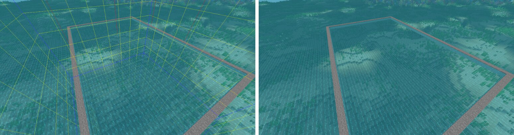
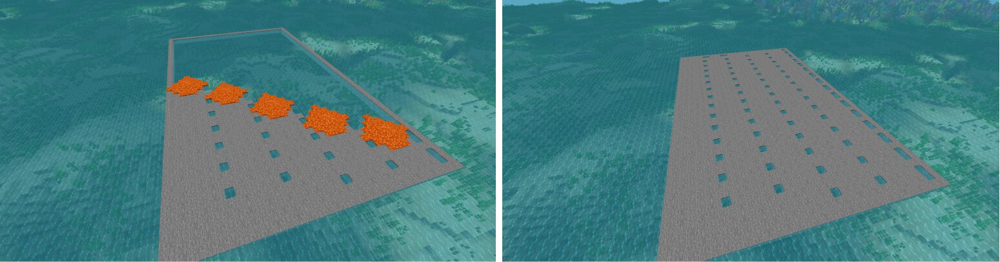
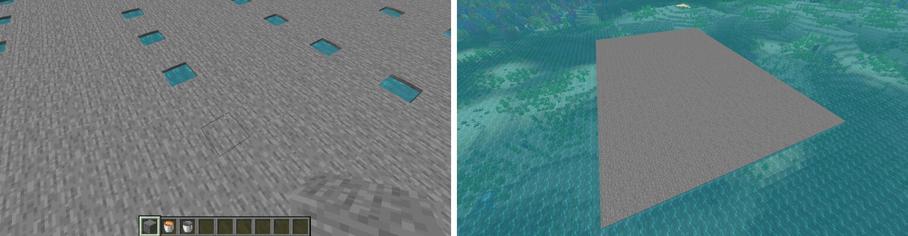

Departments
Departments do many unique things that help the town in their unique ways. Joining a department is completely voluntary! Members need to understand that there are no bosses, deadlines, or requirements. Instead, you would work at your own pace and style! Also, you will be given special powers to carry out your objectives, so you will still need to be somewhat responsible. But other than that, you are the boss of yourself!
Here are brief descriptions of each department:
- Recruitment - These people invite and help new residents join the town. This includes touring newcomers and selling out plots to them, as well as helping them with rules and commands.
- Maintenance - These people do random check ups on roads and plots. They clear plots that are unfinished and inactive, and fix roads that might have been griefed. One of the easier tasks, but also one of the most important!
- Building - These people build absolutely anything, from simple roads to elaborate wonders. Resources and schematic files would be provided.
- Resources - Huge support for builders and map artists. As you might have guessed, these people mine for resources needed by the town.
- Commerce - These people maintain shops or create new ones. Shop maintenance includes making sure you have a high personal balance and making sure the shops are full or empty depending on the circumstance.
- Map Art - Map artists do horizontal pixel art, which are then mapped to produce beautiful paintings. A really nifty program that converts any image to minecraft map art would be provided.
Recruitment
Mission Statement
Mission Statement
We establish and grow the great community we wish to achieve by helping and guiding new residents to success.
Members
Location
West wing department building room 1
Prospects
As members of this department, you represent our town and our attitude towards others
Do not push others to join our town, invite them but do not force them. If they reject an invite do not feel bad about it, you will have many more chances in the future!
Answer residents who ask questions. If they ask for resources you can use the resource department.
- New resident procedure:
- Welcome them!
- Ask them if they would like a tour. If you are busy or lazy, you can skip this.
- Ask them if they want a plot. If they want one, find them a plot.
- Give them the “Paris Rule Book” for them to keep.
- (optional) Add them to the Paris database via bot.
- Offer them to join the Paris discord. Your role will allow you to send invites to the discord server. Therefore, when inviting new town members to the Paris discord server, the link should only be placed in town/group chat.
Overall be friendly, and respect others.
Members of this department have access to the discord bot. That being said, make sure all town residents have been added to the Paris database.
Discord Bot Commands (optional but highly recommended)
Italicised commands indicate this department’s primary commands.
- pd/set (ingame player name) (plot number) (town) - sets player plot number and town. If members is not already in the database a new members will be added automatically.
- pd/set (ingame player name) (town) - sets player town. If members is not already in the database a new members will be added automatically.
- pd/add (ingame player name) - adds player to the Paris database
- pd/get (ingame player name) - gets general player information from Paris database
- pd/get (plot number) - gets general player information from Paris database
- pd/set (plot number) evict - evicts player from plot, not literally on the minecraft server
- pd/set (plot number) perm - permanently sets player resident plot to unevictable
- pd/give (department key) (member mention) - gives a member a discord role
- pd/save - saves the current data into a file
Discord Channels
#recruitment-info is all useful information needed to be known when a part of this department
#recruitment-projects is where all the detailed project overviews will be posted with the addition of any updates to the department.
#recruitment-general is the general chat only accessible to your department members.
Conference Room is the voice channel meant to enhance communication between department members.
In-game Commands
- /t add (player) - sending invitations to the town
- /msg (player) (message) - private messaging
- /r (message) - private messaging “respond”
- /plot claim - for new residents to use when giving plots
- /plot fs - puts a plot "for sale" for a player to claim
- /player (player name) - player profiles
- /tpa (player) - teleporting to a player
- /t reslist - displays all town members
- /t spawn - teleport to town spawn
- /help - You should be knowledgeable in many other commands as well.
Pro tips
Players will ask to join a town every once in a while, so you can invite them right away if you would like.
Offering a tour of the town before inviting them or sending indirect invitations using dms is a great idea going about inviting new residents and is highly encouraged! This method is very effective in filtering new residents who are better off and who will stay longer in the town community.
If someone you are talking to is undecided whether they should join the town or not, it’s up to you to convince them to join! The more experience you have the better the chance you’ll win them over, so experiment!
Eventually, if you seek to invite new residents a lot, you will realise that there are new players on the server that do not talk at all in chat and who in fact would like to join a town. If you are able to find these players (ie. using tab), then private message them, who knows they might be willing to join the town!
Extra info
Members of this department could earn extra ingame money from mayors for inviting new residents to the town.
Being part of this department is both rewarding and challenging. Many players will appreciate your invites and others will reject them. Being tilt-proof is the best weapon for this department.
If you need help or have any questions about the department please ask other members in the department first before asking help from mayors.
When new members join this department it is highly recommended for senior members of the department to coach them.
Maintenance
Mission Statement
Mission Statement
Serving our community to enhance the quality of life by dedicating ourselves to maintaining good aesthetics.
Members
Location
West wing department building room 2
Prospects
Should be very proficient with town rules especially residential plot rules and eviction criteria. Additionally, members of this department should know how towny works.
You are the only department allowed to build and destroy on residential plots. In fact, that is basically the only thing you have to do!
- If a house is breaking any building rules and the player has been active recently, then notify them through mail, discord or anything you wish.
- If a residential plot has a house built but has no owner, you have the choice to either remove the house entirely or preserve the house and put it up for sale depending on how good the house looks. Your call!
- If someone wants a pre-built house and you're in a really good mood, you can build someone a brand new house completely, but this is optional.
- If there are some minor road griefs or environmental griefs, just fix it real quick, it’s likely just an accident. Otherwise, if there are major griefs, report them to town mayors.
- If the plot follows all eviction criteria, evict them and take note of this (via bot)!
- If the plot owner has been active within the last 7 days, do nothing and wait until next week for a bot notification for reinspection.
- If the plot contains a nice/beautiful/aboveAverage house, the plot is officially a permanent plot and should be taken note of (via bot)!
Members of this department have access to the discord bot. That being said, make sure all owned resident plots have been added to the Paris database.
Discord Bot Commands (optional but highly recommended)
Italicised commands indicate this department’s primary commands.
- pd/set (ingame player name) (plot number) (town) - sets player plot number and town. If members is not already in the database a new members will be added automatically.
- pd/set (ingame player name) (town) - sets player town. If members is not already in the database a new members will be added automatically.
- pd/add (ingame player name) - adds player to the Paris database
- pd/get (ingame player name) - gets general player information from Paris database
- pd/get (plot number) - gets general player information from Paris database
- pd/set (plot number) evict - evicts player from plot, not literally on the minecraft server
- pd/set (plot number) perm - permanently sets player resident plot to unevictable
- pd/give (department key) (member mention) - gives a member a discord role
- pd/save - saves the current data into a file
Discord Channels
#maintenance-info is all useful information needed to be known when a part of this department.
#maintenance-projects is where all the detailed project overviews will be posted with the addition of any updates to the department.
#maintenance-general is the general chat only accessible to your department members.
Conference Room is the voice channel meant to enhance communication between department members.
In-game Commands
- /mail send (player name) (message) - sending ingame mail
- /player (player name) - player profiles
- /towny map big - towny map of surrounding area
- /plot fs - puts a plot "for sale" for a player to claim
- /plot nfs - puts a plot "not for sale"
- /plot set (type) - sets plot type, useful for making embassy plots
- /help - You should be knowledgeable in many other commands as well.
Pro tips
It will be very common to find pampered roads, it will be up to you to fix them. Additionally, removed leaves on plot corners are ok and do not need to be replaced.
When trying to remove locked chests on evicted plots, try to catch the owner of these locked chests online to make them physically remove the chests themselves by private messaging them. If they are not a resident of Paris, you will definitely need to know how to set a town plot type to embassy and then back to plot type regular. Otherwise, if there is no way to contact the owner of the chests, proceed with plot eviction and leave the locked chests on the plot for mayors/server staff to remove eventually. Mayors should be making weekly plot inspections for removing protections. Unless members of this department can…
Support Ticket (example)
Hello, I am the mayor/helper of Paris. In our town rules we say that residents who own town plots can get evicted if (1) their house is not well done (ex. box house, unfinished house) AND (2) they have been inactive for 7+ days in a row. Recently, we cleared X# resident plots that had these criteria. However we cannot clear everything on these plots because they have locked containers and doors which are owned by the evicted member. Is there a way to remove them? Thank you.
Plots with protections:
(e.g)(-573, 265)
(e.g)(-572, 263)
(e.g)(-572, 260)
(pictures of plots)
It is highly recommended for members of this department to discuss together the removal of a borderline/subpar house. If you have doubts about a house, ask others for their opinions, but please don’t be too picky!
Extra info
This is the hardest department to master, therefore, making members of this department highly valued.
Members of this department could earn extra ingame money from mayors for clearing unsatisfactory residential plots and patrolling/checking town borders.
If you need help or have any questions about the department please ask other members in the department first before asking help from mayors.
When new members join this department it is highly recommended for senior members of the department to coach them.
Building
Mission Statement
Mission Statement
We build Paris from the ground up to demonstrate our commitment as a community by building wonders which reflect our skills as builders of Paris.
Members
Location
West wing department building room 3
Prospects
Resources used for building town projects are found at the resource department and should only be used for town projects.
Builders do not build or destroy on private property in the town, like for example housing. Instead they will be building large scale builds on public property.
Please do not mess with already completed builds! If you have suggestions for change tho, you can talk to the mayors.
New projects will be posted with the addition of a schematics file if necessary. You will get a proper overview of upcoming projects after the previous projects are completed. If you have any questions please ask mayors or assistants.
If blueprints/schematics files are not provided in a project overview, then you may improvise builds. Additionally, all the schematics/builds we send out are authentically made by Zeus and Hades!
If something does not look right in the town report it to mayors/assistants.
Discord Channels
#building-info is all useful information needed to be known when a part of this department
#building-projects is where all the detailed project overviews will be posted with the addition of any updates to the department.
#building-general is the general chat only accessible to your department members.
Conference Room is the voice channel meant to enhance communication between department members.
In-game Commands
- Know how to use schematics
- /help - You should be knowledgeable in many other commands as well.
Pro tips
Builders are highly recommended to get Litematica (1.13 +) to assist in building wonders in version 1.15.2 and higher.
- If you are interested in getting Litematica (1.13 +) watch this video for help (mod files are linked in the video description): Litematica video
- Litematica is not as user friendly as Schematica, however it has a ton more features.
- If you need help with downloading or understanding how schematics work contact mayor Zeus_the_boss for assistance.
- If you are interested in getting Schematica (1.8 - 1.12) watch this video for help (mod files are linked in the video description): Schematica video
- Because Schematica is out of date in the latest version, we will not be using it at all in building on the server, however Schematica is a great mod to start with as a beginner in using schematics.
- If you need help with downloading or understanding how schematics work contact mayor Zeus_the_boss for assistance.
- This is an extra option meant for those who are not or can not download schematics mods.
- Fair warning: It will be a lot harder to build large structures while jumping between two worlds.
- If you need help with world downloads contact mayor Zeus_the_boss for assistance.
Extra info
Joining the ingame builder job will help you earn more money.
If you need help or have any questions about the department please ask other members in the department first before asking help from mayors.
When new members join this department it is highly recommended for senior members of the department to coach them.
Resources
Mission Statement
Mission Statement
From roaming to ravaging, our purpose to collect quantity over quality is the best bet we have.
Members
Location
East wing department building
Prospects
If you catch anyone using massive amounts of resources from the stockpile not related to department needs, notify mayors, and/or warn them to not use resources.
Of course, if someone takes 1 or 2 stacks of wood for their house, it’s really not a big deal and is in fact acceptable. It is large scale use that is illegal.
If something does not look right in the town report it to mayors/assistants.
Discord Channels
#resources-info is all useful information needed to be known when a part of this department
#resources-projects is where all the detailed project overviews will be posted with the addition of any updates to the department.
#resources-general is the general chat only accessible to your department members.
Conference Room is the voice channel meant to enhance communication between department members.
In-game Commands
- /rtp - randomly teleports you in the world you are currently in
- There should always be a resource world on the server.
- /help - You should be knowledgeable in many other commands as well.
Pro tips
Because many of the other departments are dependent on this department, the more organized this department is, the more effective the department would work. This would require special protections throughout the stockpile of resources.
Having a list of resources needed by other departments will help organize the department.
Extra info
Joining an ingame job will help you earn more money for collecting resources.
If you need help or have any questions about the department please ask other members in the department first before asking help from mayors.
When new members join this department it is highly recommended for senior members of the department to coach them.
Commerce
Mission Statement
Mission Statement
Continuously providing our customers with quality goods and services at the lowest possible price.
Members
Location
West wing department building room 4
Prospects
Paris Shops will be located south of town spawn, inside the Grand Palais. With the addition of town farms and the map art market.
Resources from the resource department may only be used for building shops. You are not allowed to use resources from the resource department to sell items as a means of personal profit.
We plan to build a prosperous server macro shop which can provide many materials for the public. Eventually, as ambition as it may sound, our goal is to reach a point where the shop is non profit.
We also plan to build a server micro shop for individuals who wish to own a small part of a large set of small shops.
If something does not look right in the town report it to mayors/assistants.
Discord Channels
#commerce-info is all useful information needed to be known when a part of this department
#commerce-projects is where all the detailed project overviews will be posted with the addition of any updates to the department.
#commerce-general is the general chat only accessible to your department members.
Conference Room is the voice channel meant to enhance communication between department members.
In-game Commands
- /auc or /ah - auction menu
- Should get the ingame ability to create chestshops.
- /help - You should be knowledgeable in many other commands as well.
Pro tips
As mayor, I never got the chance to make a shop, therefore, I do not have any tips on how to make a successful shop. I will be very lenient towards this department hoping to be very flexible with department decisions. However, we still have specific goals to achieve.
It will be up to the department to find the best prices for objects to be sold and bought.
Extra info
If you need help or have any questions about the department please ask other members in the department first before asking help from mayors.
When new members join this department it is highly recommended for senior members of the department to coach them.
Map Art
Mission Statement
Mission Statement
We enhance player lives through fun, inspiration, and creativity by building map art which everyone can appreciate.
Members
Location
West wing department building room 5
Prospects
All map art builds will be built outside of Paris in a separate town far from the main one.
Any map arts that want to be built (public or private) will need to get a light inspection from town mayors to check for sanity which includes but not limited to inappropriate propaganda, violence, and resources used.
The map art department will be split into 2 separate sectors. The first being the Public Sector, and the second being the Private Sector.
Here is how it’s going to work:
- Public Sector
- Map arts are requested and built depending on majority rule and/or mayors.
- When building public map art the use of the resource dept is highly encouraged.
- Anyone who helps build public map arts will be given credit for building the map art.
- Whoever proposed a public map art will NOT be credited for having proposed the map art. We encourage those who want to be credited for their proposal to build map art in the Private Sector.
- Public map art will be sold under the name of the town. This means that whoever sells the public map art must deposit the profits into the town bank.
- The public sector can help against conflicting individuals who all want to do the same private map art.
- If you are a member who does not have any ideas for map arts and just wants to help, this sector is for you.
- The public sector will be limited to 2 map arts built at once.
- Private Sector
- Map arts are requested and built by individuals. This means that to proceed in building a private map art, ONE player has to be signed onto the map art.
- When building private map art the use of the resource department is highly discouraged. Obviously there are some exceptions to this, please talk to town mayors for approval before using the resource department. Otherwise if you are not allowed, please collect the resource you need on your own.
- Outside town members are allowed to help build, however their credit will completely depend on the owner of the map art.
- Whoever proposed a private map art must claim their map art privately with town mayors. If you seek public opinion on whether or not you should build your private map art, mayors are not responsible for stolen map art ideas.
- Private map art will be sold under the name of who ever owns the map art. This means that whoever sells the private map art must give the profits to the owner of the map art.
- Private co-ops are not restricted, however ONE player must claim the map art. This is to avoid any conflicting issues which includes single player chestshops and unbalanced workloads. If multiple players seek private ownership of one map art, the public sector can be an easy solution. This is why we encourage map art owners to claim map arts privately with town mayors.
- Private map art owners can only work on ONE map art at time, you are not allowed to claim more than one map art at once.
If something does not look right in the town report it to mayors/assistants.
Discord Channels
#map-art-info is all useful information needed to be known when a part of this department
#map-art-projects is where all the detailed project overviews will be posted with the addition of any updates to the department.
#map-art-general is the general chat only accessible to your department members.
Conference Room is the voice channel meant to enhance communication between department members.
In-game Commands
- /res friend add (player) - friend members for mutual permissions
- /help - You should be knowledgeable in many other commands as well.
Pro tips
Our most highly recommended program to use includes: Map Art Program
The directions you need are written on the website, but always remember to select “Craig’s formula” and make sure the image you select in 128x128 pixels. This is a very user friendly program.
Try not to build overly detailed map-arts, important features may become unrecognizable!
Maps can be locked when using a glass pane in a cartography table. This creates a new Map containing the same data and locks it. All copies of this new map are also locked. A locked map never changes, even when the depicted terrain changes.
Extra info
Joining the ingame builder job will help you earn more money.
This department will also be given the ability to sell map art with the assistance of the commerce department or not.
If you need help or have any questions about the department please ask other members in the department first before asking help from mayors.
When new members join this department it is highly recommended for senior members of the department to coach them.
Terraforming
Mission Statement
Mission Statement
The first responders to town expansion, our destruction and terraforming sets up the land which we live on.
Members
Location
West wing department building room 6
Prospects
You are allowed to use resources from the resource department for terraforming purposes only. Additionally, the resources you gain from terraforming could also be donated to the resource department.
Mainland Paris will be settled on an ocean so that terraforming can be done fast. Terraforming on an ocean will comprise of lava pouring onto the surface of water.
If something does not look right in the town report it to mayors/assistants
Discord Channels
#terraforming-info is all useful information needed to be known when a part of this department
#terraforming-projects is where all the detailed project overviews will be posted with the addition of any updates to the department.
#terraforming-general is the general chat only accessible to your department members.
Conference Room is the voice channel meant to enhance communication between department members.
In-game Commands
- /help - You should be knowledgeable in many other commands as well.
Pro tips
Terraforming on land masses will be the most self explanatory (ex. destroy mountains and/or flatten terrain). However because Paris is settled on an ocean, mountains are irrelevant and the water is already a flat surface we can take advantage of!
Most of Paris terraforming will require only lava buckets, and basic calculations.
Here is how it's done:
- Outline the region you want to terraform using the f3 + g Minecraft feature to help outline the chunks necessary to terraform.
- Pour lava onto water in an efficient manner.
- Fill in the missed wholes. Done!
 Step 2
 Step 3

Extra info
Joining an ingame job will help you earn more money for destroying/collecting resources.
If you need help or have any questions about the department please ask other members in the department first before asking help from mayors.
When new members join this department it is highly recommended for senior members of the department to coach them.